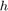
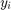
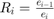
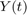
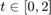
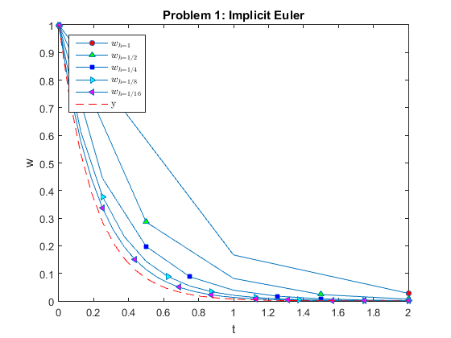
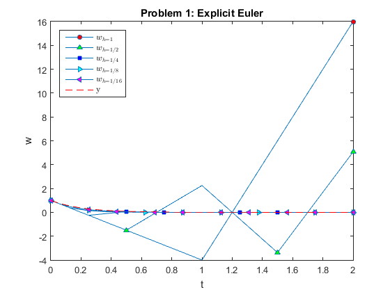

Lab 13 Solution
Lab Instructor: Valeria Barra
Contents
DUE Tuesday 04-26-2016 ;
Problem 1: Implicit Euler Method
Implement your own Implicit (backward) Euler's method to solve the IVP y'=-5*y, y(0)=1. Write your results in a table with columns in order: , the approximated solution , the error , and the ratio . What is the order of convergence? How can you infer it from the table? Finally, plot in the same figure the approximations you have found for all five values of together with the actual solution  for .
Solution:
clear all; close all; % function handle of the RHS function for the problem f=@(t,y)(-5.*y); % the actual solution y=@(t)( exp(-5.*t)); % the vector of all h's h=2.^(0:-1:-4); % the IC given w0=1; Markers = ['o' '^' 's' '>' '<']; % just different symbols to plot Colors = ['r' 'g' 'b' 'c' 'm']; % different colors used for the different markers % the main cycle of the call of the function and display starts here % print the header of the table fprintf('\nProblem 1 Implicit Euler\n') fprintf('__________________________________________________\n\n') fprintf('h w_i Error Ratio \n') fprintf('__________________________________________________\n') for j=1:length(h) t{j}=(0:h(j):2); % domain % the implicit method here: w{j} =ImplicitEulerForLab13(t{j}, w0,h(j)); Error(j)=abs(y(t{j}(end)) - w{j}(end)); % print the table if j==1 fprintf('%5.4f %7.4e %8.4e \n',h(j), w{j}(end) , Error(j)) else Ratio(j-1)=Error(j-1)/Error(j); fprintf('%5.4f %7.4e %8.4e %7.4f \n',h(j),w{j}(end) ,Error(j), Ratio(j-1)) end % plots of all the approximations here line_fewer_markers(t{j},w{j},2*j,Markers(j),'MarkerFaceColor',Colors(j),'MarkerSize',5); hold on % plotting here if j==length(h) plot(t{j},y(t{j}),'--r') % plots the real solution only the last time hold on end end fprintf('__________________________________________________\n') % attributes of the figure here title('Problem 1: Implicit Euler') xlabel('t') ylabel('w') box on legend({'$w_{h=1}$','$w_{h=1/2}$','$w_{h=1/4}$','$w_{h=1/8}$','$w_{h=1/16}$','y'},'interpreter','latex','location','northwest'); figure; % opens up a new figure % print the header of the table fprintf('\nProblem 1 Explicit Euler\n') fprintf('__________________________________________________\n\n') fprintf('h w_i Error Ratio \n') fprintf('__________________________________________________\n') for j=1:length(h) % the explicit method here: wE{j} = Euler(f, t{j}, w0,h(j)); ErrorE(j)=abs(y(t{j}(end)) - wE{j}(end)); % print the table if j==1 fprintf('%5.4f %7.4e %8.4e \n',h(j), wE{j}(end) , ErrorE(j)) else RatioE(j-1)=ErrorE(j-1)/ErrorE(j); fprintf('%5.4f %7.4e %8.4e %7.4f \n',h(j),wE{j}(end) ,ErrorE(j), RatioE(j-1)) end % plots of all the approximations here line_fewer_markers(t{j},wE{j},2*j,Markers(j),'MarkerFaceColor',Colors(j),'MarkerSize',5); hold on % plotting here if j==length(h) plot(t{j},y(t{j}),'--r') % plots the real solution only the last time hold on end end fprintf('__________________________________________________\n') % attributes of the figure here title('Problem 1: Explicit Euler') xlabel('t') ylabel('w') box on legend({'$w_{h=1}$','$w_{h=1/2}$','$w_{h=1/4}$','$w_{h=1/8}$','$w_{h=1/16}$','y'},'interpreter','latex','location','northwest');
Problem 1 Implicit Euler __________________________________________________ h w_i Error Ratio __________________________________________________ 1.0000 2.7778e-02 2.7732e-02 0.5000 6.6639e-03 6.6185e-03 4.1901 0.2500 1.5224e-03 1.4770e-03 4.4809 0.1250 4.2301e-04 3.7761e-04 3.9116 0.0625 1.6627e-04 1.2087e-04 3.1240 __________________________________________________ Problem 1 Explicit Euler __________________________________________________ h w_i Error Ratio __________________________________________________ 1.0000 1.6000e+01 1.6000e+01 0.5000 5.0625e+00 5.0625e+00 3.1605 0.2500 1.5259e-05 3.0141e-05 167958.2950 0.1250 1.5293e-07 4.5247e-05 0.6661 0.0625 6.2048e-06 3.9195e-05 1.1544 __________________________________________________ 
Comments on Results: Even though Implicit (backward) Euler's scheme is still of first order, in this particular exercise we see that the ratio between two consecutive errors is roughly 4, as h was halved (inidcating that the scheme was roughly of quadratic order). The advantage of using an Implicit scheme rather than an Explicit one stands in the fact that the approximated solution is less sensitive to variations of the step size h. The explicit method needs to satisfy stability condition on the step size (this should be sufficiently small) to have reliable results. While the Implicit method is unconditionally stable (the reliability of the method does not depend on the step size chosen).